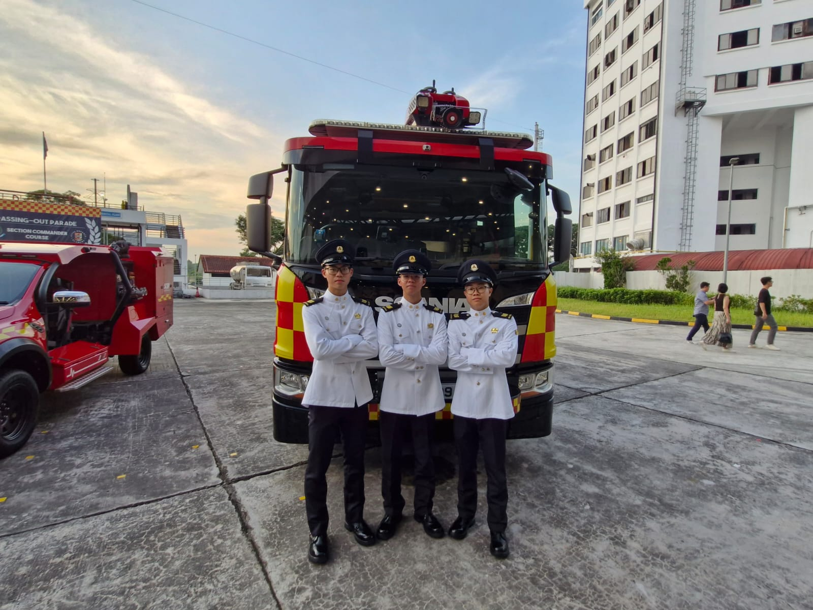

A personal story of how my time in the civil defence led me to choose Biomedical Engineering
Serving as a firefighter in the Singapore Civil Defence Force exposed me to the critical importance of purpose-driven work. In high-stakes environments—whether responding to emergencies or handling hazardous materials—every decision could mean the difference between life and death. These experiences gave me a deep respect for systems that support human survival, from the protective equipment we relied on to the physiological limits we had to understand and manage in real time. This exposure sparked my interest in the intersection of technology and human health. I became increasingly curious about how medical devices, monitoring systems, and engineered solutions could enhance both emergency response and long-term healthcare. Biomedical engineering emerged as the field where I could combine this frontline insight with my passion for science and problem-solving. It offers a way to build technologies that not only respond to crises but also improve quality of life at scale. For me, it’s a natural extension of the same mission — to protect, serve, and save lives — now through innovation and engineering

My Core Principles
My Mission
My mission is to bridge the gap between real-world needs and biomedical innovation by developing medical technologies that are not only effective, but also accessible and affordable to the masses. I strive to create solutions grounded in scientific rigor, human-centered design, and practical deployment, particularly for underserved communities and critical care scenarios. With a foundation built on discipline, adaptability, and purpose, I aim to democratize health innovation and ensure that life-saving technology doesn’t stay confined to labs or elite hospitals—but reaches the hands of those who need it most.